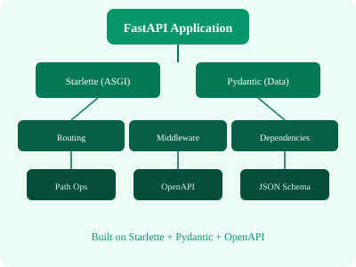

← Back to Tutorials

FastAPI Tutorial: A Complete Guide
A comprehensive guide to building modern web APIs with FastAPI — from Hello World to deployment. Covers path/query parameters, Pydantic models, SQL/MongoDB databases, WebSockets, GraphQL, middleware, and production deployment. Each chapter includes explanations, code samples, SVGs, and practice exercises.
Table of Contents
1. Home Course overview, prerequisite, setup 2. Introduction What is FastAPI, why use it, comparison with Flask/Django 3. Hello World First FastAPI app, run with uvicorn 4. OpenAPI & Swagger Automatic docs, /docs, /redoc 5. Uvicorn Basics ASGI server, reload, host/port, lifecycle 6. Type Hints Python type annotations, Union, Optional, List 7. IDE Support Autocomplete, type checking, Pylance 8. REST Architecture HTTP methods, resources, stateless design 9. Path Parameters Dynamic URLs, type conversion, order 10. Query Parameters Optional params, defaults, type coercion 11. Parameter Validation Query, Path, constraints, regex 12. Pydantic Models Data models, validation, BaseModel 13. Request Body JSON parsing, model validation, embedding 14. HTML Templates Jinja2Template, template rendering 15. Static Files MountStaticFiles, CSS/JS/images 16. HTML Forms Form submission, POST handling 17. Form Data Form, File, non-json data 18. File Upload UploadFile, multiple files, validation 19. Cookie Parameters Reading/writing cookies 20. Header Parameters Custom headers, User-Agent, auth headers 21. Response Model response_model, filtering, aliases 22. Nested Models Sub-models, lists, deep nesting 23. Dependencies Depends, dependency injection, reuse 24. CORS Cross-Origin Resource Sharing, middleware 25. CRUD Operations Create, Read, Update, Delete patterns 26. SQL Databases SQLAlchemy, async, PostgreSQL, migrations 27. MongoDB Motor, async, document operations 28. GraphQL Strawberry, graphene, queries/mutations 29. WebSockets Real-time communication, chat example 30. Event Handlers startup/shutdown, lifespan 31. Sub-Applications Mount sub-apps, versioning 32. Middleware Custom middleware, request/response processing 33. Flask Mount Mount Flask apps inside FastAPI 34. Deployment Uvicorn, Gunicorn, Docker, cloud hosting 35. Quick Guide Command cheatsheet, common patterns 36. Useful Resources Docs, community, books, tools 37. Discussion Q&A, comparisons, advanced topics 38. Appendix Best practices, interview questions, glossary 39. Bonus Who's who in FastAPI ecosystem
Start Learning →